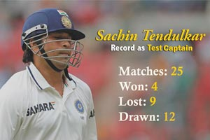

Sachin Tendulkar took The Quint on a walk down memory lane as he reminisced about his childhood days. He says he used to get so caught up playing cricket that he would forget to drink milk, and his mother would have to run after him to remind him.
From taking a 60-hour-long train ride to hand-picking litchis, Sudhir Kumar Gautam has done it all for his idol, Sachin Tendulkar. Arguably Sachin’s best-known fan, who religiously attends all his matches, Sudhir is the selfless devotee who brings Tendulkar two boxes of litchis every year without fail.
From mentoring Mumbai Indians, to working on his autobiography and the docu-feature on his life, to staying in touch with his fans on social media, the master blaster has been a busy man since his retirement in 2013.
With just one first-class season under his belt, a 16-year-old Tendulkar was selected for India’s tour of Pakistan in 1989. At 16 years and 205 days old, he scored 15 runs in his debut in the Karachi Test. Till date, Sachin holds the record for being the youngest cricketer to have represented India.

From his first Test on 15 November 1989, to his last at the Wankhede on 14 November 2013 – Sachin played a record 200 matches in whites for India.
Sachin got out for a second-ball duck in his first ODI during India’s tour of Pakistan in 1989. In his 24 years in the Indian dressing room, Sachin has played 463 ODIs – more than any other cricketer in the world.
After a 34 innings long wait, Sachin Tendulkar became the first cricketer to amass a hundred hundreds in international cricket on 16 March 2012. He remains the cricketer in history with the most centuries.
Sachin leads the field for the most centuries in Test cricket. Of his 100, 51 were scored in the longest format. The player closest to him is Jacques Kallis with 45 tons.
With 49 ODI centuries, Sachin holds the record for most 100s in the 50-over format. He leads Ricky Ponting by 19 whole centuries.
In the Test format, Sachin’s 200 outings earned him returns of 15,921 runs at an average of 53.78. More than 2,000 runs than the next man on the list, Ricky Ponting.
In 463 one-day outings, Sachin has scored 18,426 ODI runs – the most in history and almost 4,000 runs ahead of Kumar Sangakkara.
200 Tests, 463 ODIs and 1 T20 match and of course Sachin Ramesh Tendulkar holds the record for the most runs in international cricket! 34,357 runs collected over a span of 24 years.
"Sachin, Sachin" - the chant that reverberated in stadiums across the globe is older than you thought it was. "I used to go play downstairs. My mother would yell out "Sachin, Sachin". I never thought it would go beyond my childhood days," the master blaster says.
Sachin has adopted two villages – Puttamraju Kandriga in Nellore, Andhra Pradesh and Donja in Osmanabad, Maharashtra - under the Sansad Adarsh Gram Yojna.
Sachin Tendulkar signed off as a cricketing legend, but there are still some, (okay, very few) records from his career that he may not be proud of. One such record is the fact that he won only 4 out of 25 matches as Test captain.